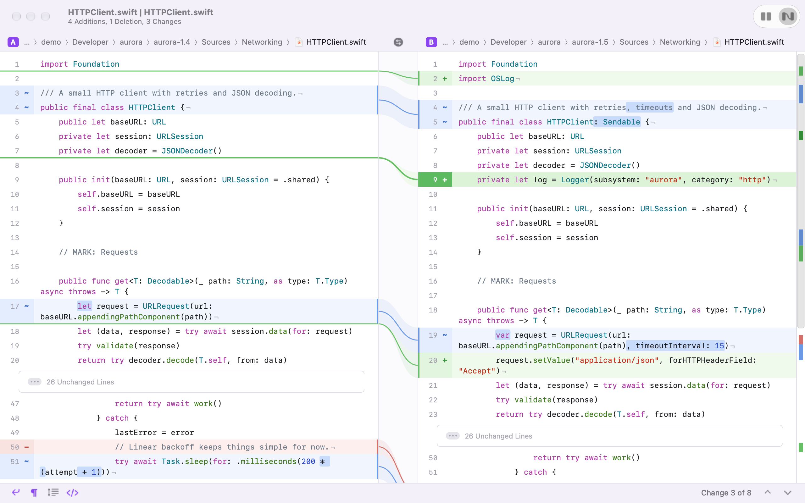

Free & open source · No subscription. Ever.
The prettiest diff
on your Mac.
Free forever.
Twofold is a native macOS app for comparing files and folders. It's gorgeous, it's fast, and it's yours to keep: GPL licensed, no account, no telemetry, no dependencies, and no monthly bill for looking at two text files.
macOS 26 or later · Apple silicon & Intel · Mac App Store version coming later

You bought it once.
That should be the end of it.
Somewhere along the way, diff tools started renting you your own screen. Pay up front, then pay again every month, or watch the app you already paid for get left behind on the next macOS release.
That's absurd. Comparing two files is not a service. Twofold is free, open source and builds from a single command. Nobody can put it behind a paywall, switch off your license, or email you a renewal reminder. Not even us.
Free today, free tomorrow, free after the next macOS update.
Pure Swift and AppKit. Nothing to download, nothing to break.
No sign-in, no telemetry, no license server phoning home.
Zero subscriptions. Zero dependencies. Zero greedy asshats.
Made for looking at changes.
Every pixel is drawn natively with Core Text. No web view, no Electron, no lag.
Fluid layout
Changes on each side are joined by curves through the middle, and both sides glide so the change you're reading stays lined up. No filler lines.
Blocks layout
Prefer the classic look? Matching lines sit on the same row and both panes scroll together. Switch with ⌘1 and ⌘2.
Word-level highlights
See exactly what changed inside a line, down to the characters when only part of a word moved.
Folder comparison
Compare whole directories. Changed, added and removed files stream into a tidy sidebar while the comparison runs in parallel.
Absurdly fast
Diffs 100,000 lines in under 60 ms, scrolls at 120 Hz, and compares 10,000 files per side in about a second.
Light & dark
Two hand-tuned themes that follow your system, or pick one yourself. Switching cross-fades, because why not.


- ✓ Unchanged runs fold away; click to expand
- ✓ Soft wrapping and visible line endings
- ✓ Overview strip with every change at a glance
- ✓ Animated next / previous change with ⌘↓ and ⌘↑
- ✓ Reloads automatically when files change on disk
- ✓ Works as
git difftool, including whole trees - ✓ UTF-8, UTF-16 and Latin-1, any line endings
- ✓ Drop two files on the Dock icon and go
The Kaleidoscope alternative
you don't have to rent.
There are plenty of diff tools for the Mac. Only one is native, beautiful, open source and free.
| Twofold | Kaleidoscope | Beyond Compare | FileMerge | Meld | P4Merge | |
|---|---|---|---|---|---|---|
| Price | Free forever | Subscription | Paid license | Free with Xcode | Free | Free |
| Native macOS app | ● Yes | ● Yes | Cross-platform UI | ● Yes | GTK | Qt |
| Open source | ● GPLv3 | No | No | No | ● GPL | No |
| No account or license key | ● Yes | No | No | ● Yes | ● Yes | ● Yes |
| Folder comparison | ● Yes | ● Yes | ● Yes | ● Yes | ● Yes | No |
| Merge & edit | On the roadmap | ● Yes | ● Yes | ● Yes | ● Yes | ● Yes |
| Actually pretty | ● Very | ● Yes | Functional | Dated | Functional | Dated |
Kaleidoscope, Beyond Compare, FileMerge, Meld and P4Merge are trademarks of their respective owners. Pricing and features as we understand them; check each vendor for current details. "Actually pretty" is our opinion, and we stand by it.
Small on purpose.
Twofold isn't trying to be a git client or a do-everything merge suite. It does one thing: shows you what changed between two files or two folders, beautifully and instantly. It's a lightweight viewer you'll actually enjoy opening. Merging and editing are next.
Roadmap
Version 1: shipped
File and folder comparison, Fluid and Blocks layouts, light and dark themes, git difftool.
Merge & edit
Copy changes between sides, edit in place, save.
Three-way merge
Resolve git conflicts as git mergetool.
Syntax highlighting
Language-aware colours on top of the change colours.
Image diff
Side by side, overlay and pixel difference views.
Unified layout, ignore whitespace, find
The small things that add up.
Mac App Store
One-click install and updates. The source stays open, and there will never be a subscription.
Get it.
Download a release, or build it yourself. All you need is macOS 26 and the Xcode Command Line Tools.
git clone https://github.com/OWNER/twofold.git
cd twofold
make starttwofold commandmake install
twofold old.swift new.swiftgit config --global diff.tool twofold
git config --global difftool.twofold.cmd 'twofold --wait "$LOCAL" "$REMOTE"'
git config --global difftool.prompt false